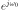
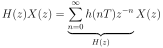
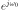
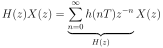

Next: IIR filter topologies Up: IIR Filter Previous: Determining the data-flow diagram Contents
 are the FIR coefficients and  the recursive coefficients.
Note the signs of the recursive coefficients are inverted in the
actual implementation of the filter. This can be seen when the
function  is actually multiplied with an input signal to
obtain the output signal (see Eq. 164 and Fig. 21).
The “1” in the denominator represents actually the output of
the filter. If this factor is not one then the output will be scaled
by that factor. However, usually this is kept one.
are the FIR coefficients and  the recursive coefficients.
Note the signs of the recursive coefficients are inverted in the
actual implementation of the filter. This can be seen when the
function  is actually multiplied with an input signal to
obtain the output signal (see Eq. 164 and Fig. 21).
The “1” in the denominator represents actually the output of
the filter. If this factor is not one then the output will be scaled
by that factor. However, usually this is kept one.
In Python filtering is performed with the command:
import scipy.signal as signal Y = signal.lfilter(B,A,X)where B are the FIR coefficients, A the IIR coefficients and X is the input. For a pure FIR filter we just have:
Y = signal.lfilter(B,1,X)The “1” represents the output.
![\includegraphics[width=\textwidth]{iir_types}](img404.svg)
|